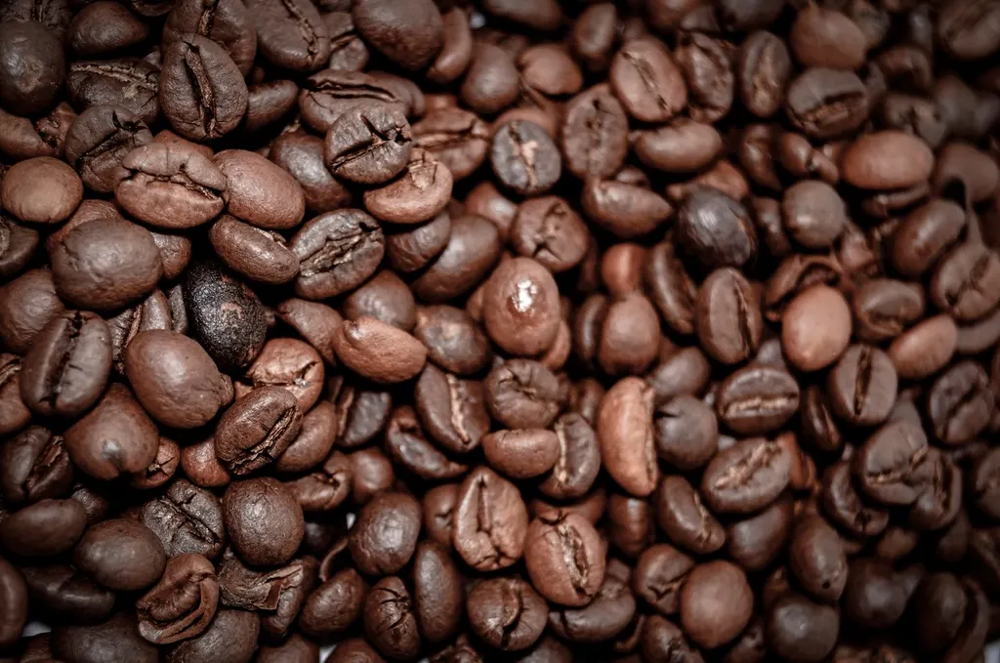

Lowcountry Grind is run out of Hampton County, South Carolina, by the owner of a small-town coffeehouse. We make coffee for people every day, so these guides lean on what actually matters when you brew every single morning: grind quality, repeatability, cleanup, and whether the thing survives a humid Lowcountry kitchen.
How these guides are made
Research and first drafts on this site are AI-assisted, then reviewed and edited by a human. We have not hands-on tested every product listed; when a note comes from our own bar or kitchen we say so. Product details come from the manufacturers' Amazon listings, which can change.
Photo credits
Photos are public-domain (CC0) images from Habib Parvin (stocksnap), Blake Verdoorn (stocksnap), rawpixel (rawpixel), rawpixel (rawpixel), rawpixel (rawpixel), rawpixel (rawpixel), rawpixel (rawpixel), rawpixel (rawpixel), Alex Holt (stocksnap), rawpixel (rawpixel), Afta Putta Gunawan (stocksnap). They show coffee in general, not the specific products we recommend.